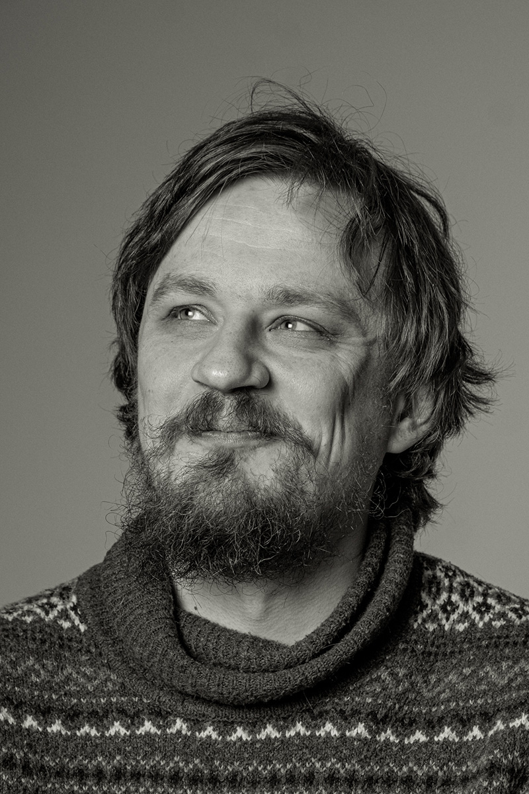

你好。
我是弗拉基米尔·基谢廖夫，一名常驻俄罗斯圣彼得堡的软件工程师和架构师。我设计并构建扛得住高负载、经得起长期运行的系统。

§ 02 — 方向
架构，尤其是它社会性的一面：大家一起做设计，把各种约束摆到桌面上公开权衡，最后得出一个谁也无法独自画出来的系统。
日常工作中，我写 JavaScript 和 TypeScript，也写 .NET（C#、F#）、Python、Java 和 SQL。
我关注社会化软件架构、敏捷架构、软件国际化，以及 TRIZ 和 ARIZ。
§ 03 — 更多